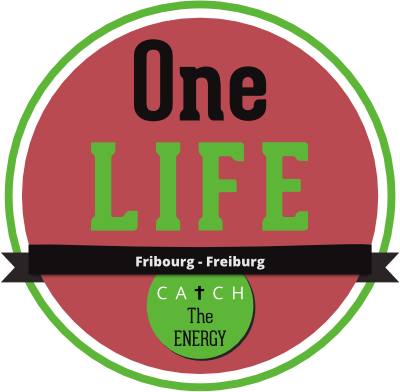
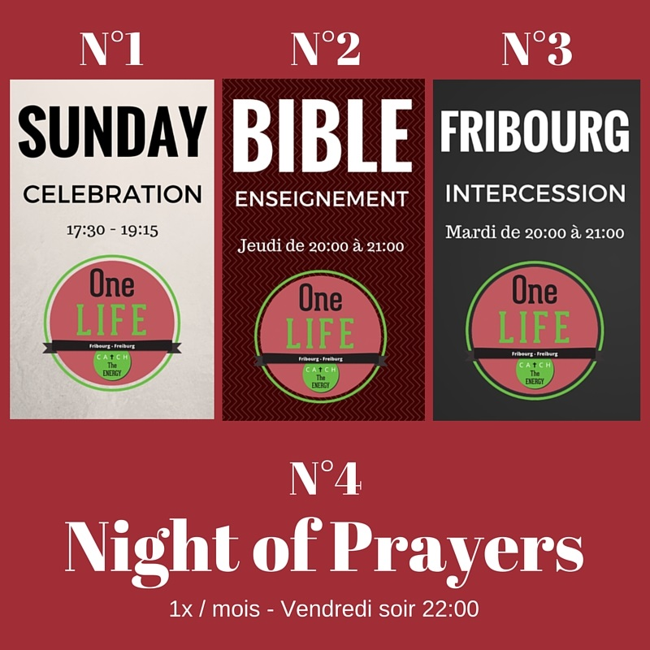

One life Fribourg est une église fondée par l'église évangélique de Bulle en ville de Fribourg depuis septembre 2014. Notre église est un espace multiculturel et dynamique pour manifester la présence de Dieu en faveur de ceux qui le recherchent ou le connaissent déjà. Ensemble nous grandissons dans une foi vivante en Jésus-Christ, Sauveur du monde et Seigneur de toute la création. Nous voulons exprimer notre spiritualité de manière adaptée à notre environnement fribourgeois actuel.
One life Fribourg est au bénéfice d'une équipe de ministères déjà présente à Bulle, dont les pasteurs Juan et Marian Espejo-Suarez, David et Laure Hausmann, Anne et Alain Kreis et Francesco Gangemi.
Cette église est membre des Eglises Evangéliques Apostoliques Romandes (www.eear.ch) et appartient au Réseau Evangélique (www.evangelique.ch).

Impasse de la sous-station 6, 1700 Fribourg
Pour plus de renseignement, nous sommes joingable aux +41 79 960 60 58